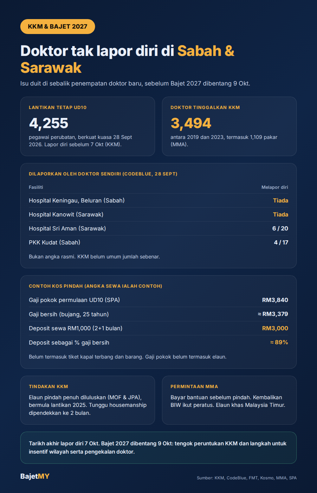

Seramai 4,255 pegawai perubatan diberi lantikan tetap Gred UD10 berkuat kuasa 28 September 2026, menurut kenyataan Kementerian Kesihatan (KKM). Tapi bila sebahagian daripada mereka ditempatkan ke Sabah dan Sarawak, ada hospital yang dilaporkan langsung tak menerima seorang pun doktor baru.
Antara sebab yang paling banyak disebut? Duit.

Apa yang berlaku
Menurut laporan CodeBlue pada 28 September, yang dikumpul daripada hantaran doktor dan petugas kesihatan di media sosial:
| Fasiliti | Laporan |
|---|---|
| Hospital Keningau (Sabah) | Tiada doktor baru melapor diri |
| Hospital Beluran (Sabah) | Tiada doktor baru melapor diri |
| Hospital Kanowit (Sarawak) | Tiada doktor baru melapor diri |
| Hospital Sri Aman (Sarawak) | 6 daripada 20 melapor diri |
| Pejabat Kesihatan Kawasan Kudat (Sabah) | 4 daripada 17 melapor diri |
Penting untuk diingat: angka ini bukan angka rasmi. KKM belum mendedahkan jumlah sebenar doktor yang tidak melapor diri. Ketua Setiausaha Negara pada 3 Oktober berkata doktor yang ditempatkan ke Sabah dan Sarawak masih ada masa hingga 7 Oktober untuk melapor diri.
Di mana isu duitnya?
1. Kos pindah dibayar dulu, dituntut kemudian
Doktor yang dihantar ke Sabah atau Sarawak perlu menanggung kos berpindah terlebih dahulu sebelum menuntut elaun. Laporan FMT pada 4 Oktober menyebut ramai yang tidak melapor diri kerana tuntutan mereka ditolak.
Contoh kiraan (angka sewa ialah contoh, bukan data):
- Gaji pokok permulaan Pegawai Perubatan UD10: RM3,840 (Suruhanjaya Perkhidmatan Awam)
- Gaji bersih selepas KWSP, PERKESO, SIP dan PCB (bujang, 25 tahun): lebih kurang RM3,379, dikira guna Kalkulator Gaji Bersih
- Sewa rumah RM1,000 sebulan, deposit 2 bulan + 1 bulan pendahuluan: RM3,000
RM3,000 ialah kira-kira 89% daripada gaji bersih sebulan, belum termasuk tiket kapal terbang, barang dan keperluan rumah. Gaji pokok juga belum termasuk elaun, jadi pendapatan sebenar doktor lebih tinggi, tapi kos pendahuluan ini tetap besar untuk doktor yang baru bermula.
2. Insentif wilayah (BIW) ditukar ke kadar tetap
Bayaran Insentif Wilayah (BIW) diberi untuk menarik dan mengekalkan penjawat awam di Sabah dan Sarawak. Menurut Persatuan Perubatan Malaysia (MMA), insentif ini ditukar daripada kadar peratusan kepada kadar tetap, dan perubahan itu "melemahkan nilai" insentif tersebut dengan ketara.
3. Bukan hanya duit
Doktor yang dipetik dalam laporan turut menyebut kurangnya daya tarikan untuk terus berkhidmat dengan KKM, termasuk laluan kerjaya dan beban kerja.
Apa tindakan KKM?
Pada 4 Oktober, KKM mengumumkan elaun perpindahan penuh diluluskan dengan kelulusan Kementerian Kewangan dan Jabatan Perkhidmatan Awam (JPA). Bayaran bermula dengan lantikan tetap kohort 2025, dan akan dilanjutkan kepada lantikan 2026 dan seterusnya.
KKM juga berkata tempoh menunggu penempatan program latihan siswazah perubatan (housemanship) telah dipendekkan kepada dua bulan, berbanding lebih 10 bulan sebelum ini.
Apa yang MMA minta
Presiden MMA, Dr L Sivanaesan, meminta:
- Bantuan perpindahan dibayar sebelum doktor berpindah, bukan berbulan-bulan kemudian melalui tuntutan.
- BIW dikembalikan kepada kadar berasaskan peratusan.
- Elaun khas perkhidmatan di Malaysia Timur, serta bantuan perumahan, pengangkutan dan bonus pengekalan.
Masalah yang lebih besar
Isu ini berlaku dalam konteks masalah tenaga kerja yang lebih lama. Menurut MMA, seramai 3,494 doktor meninggalkan KKM antara 2019 dan 2023, termasuk 2,385 pegawai perubatan tetap dan 1,109 pakar.
Tbf: ada usaha, tapi isu belum selesai
KKM bertindak pantas meluluskan elaun pindah penuh, dan tempoh menunggu housemanship sudah dipendekkan. Tapi kes ini menunjukkan bagaimana perkara yang nampak kecil, seperti tuntutan elaun yang lambat atau ditolak, boleh menjejaskan perkhidmatan kesihatan di kawasan yang paling memerlukan.
Apa yang perlu diperhatikan
- 7 Oktober: tarikh akhir lapor diri. Perhatikan sama ada KKM mengumumkan angka rasmi.
- 9 Oktober: Bajet 2027. Perhatikan peruntukan KKM dan apa-apa langkah untuk insentif wilayah, elaun pindah dan pengekalan doktor.
Ringkasan
Ribuan doktor baru diberi lantikan tetap, tapi penempatan ke Sabah dan Sarawak berdepan masalah kerana kos pindah perlu didahulukan, ada tuntutan yang ditolak dan insentif wilayah yang dikatakan berkurang nilainya. KKM telah meluluskan elaun pindah penuh, dan Bajet 2027 akan menunjukkan sejauh mana isu ini ditangani.
Sumber
- Kementerian Kesihatan Malaysia: kenyataan lantikan 4,255 pegawai perubatan UD10 (1 Oktober 2026, dilaporkan FMT dan Malay Mail)
- CodeBlue: Doctor No-Shows For Permanent Posts Hit Sabah, Sarawak (28 September 2026)
- CodeBlue: kenyataan MMA tentang BIW dan bantuan perpindahan (1 Oktober 2026)
- FMT: KKM luluskan tuntutan elaun pindah untuk doktor ke Malaysia Timur (4 Oktober 2026)
- Kosmo: Doktor ke Sabah, Sarawak ada hingga 7 Oktober untuk lapor diri (3 Oktober 2026)
- MMA melalui Media Selangor dan Buzzkini: 3,494 doktor tinggalkan KKM 2019 hingga 2023 (2 Oktober 2026)
- Suruhanjaya Perkhidmatan Awam: gaji permulaan Pegawai Perubatan UD10